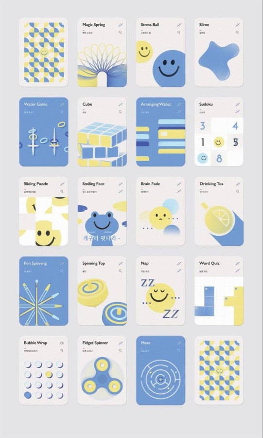
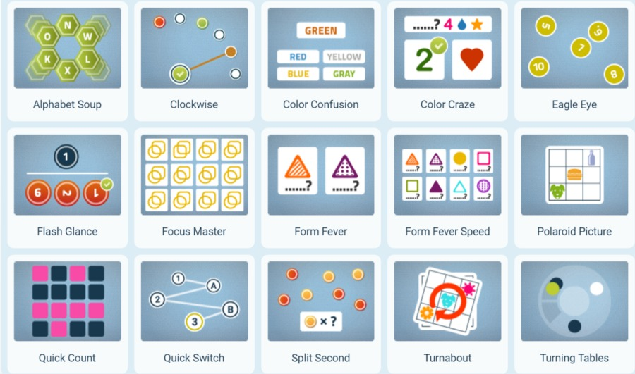
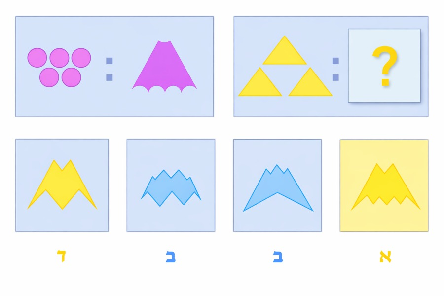
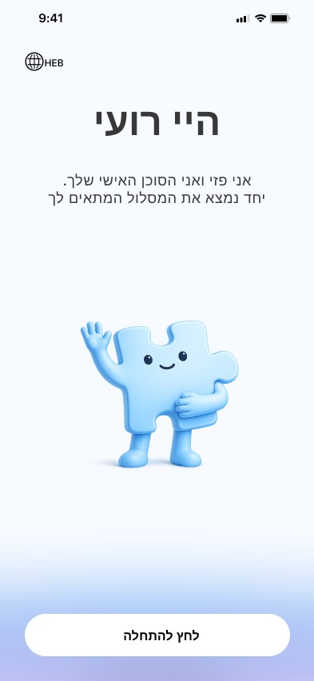
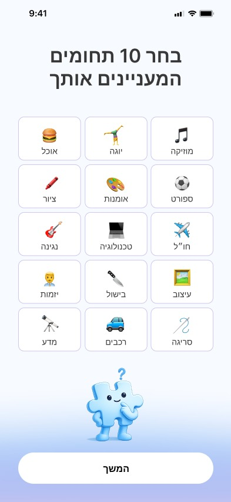
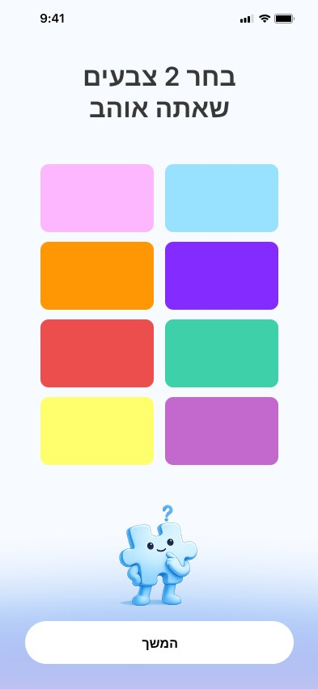

Designing Pazi, a Career Guide for Young Israelis
Pazi is a mobile app that helps young adults, especially Israelis just out of the army, find what to study and what to work in, through playful questions and an AI chat.
Problem
Many young Israelis finish their service with no idea what comes next, and career tests feel like exams.
Solution
A gamified diagnostic: short, tappable questions, a friendly mascot and an AI chat that ends with a clear next step.
Goal
Get more people to finish the diagnostic and take a real next step.
Role UX research, UX/UI design · Tools Figma · Platform iOS + Android, Hebrew
User Research
Who Pazi is for, and what holds them back
KPIs
How Pazi moves the experience: a classic career test vs. Pazi
Finished the diagnostic
Enjoyed the process
Took a next step
Share of users. “Pazi” numbers are the targets I set for the design.
Research & Inspiration
Aptitude tests feel clinical and exhausting. I studied brain-game apps to see how they make testing fun:
- Games over exams: short puzzles instead of multiple choice
- A friendly face softens the stakes
- Instant, colorful feedback keeps people going



Process & Decisions
- A mascot as a guide at every step
- One short question per screen with a big "Continue"
- Icon and color cards instead of multiple choice
- Results that end in an action, like a course to sign up for
How I thought it through
What I saw
Aptitude tests feel like exams
People quit halfway through long forms
Results that lead nowhere
What users said
“I have no idea what suits me”
“Another test? No thanks”
“OK, so what do I do now?”
Ideas
Turn questions into games
A chat instead of a form
A friendly puzzle-piece mascot
What I chose
One question per screen
AI chat for the thinking skills part
Results with one next step
The onboarding diagnostic
Soft blues and violets keep a stressful topic calm and friendly.



Brand & Visual Identity
A soft, optimistic palette that feels calm, not corporate.
What I took away
The tone of a test matters. The same questions feel different as a game than as an exam.
Design for a real moment. Roi's worry about money and direction kept the flow grounded.
A result should end in an action. The next step has to be obvious.